Version 1.2 · översatt artikel
RoboCam – styr roboten i förstaperson med datorns tangentbord
Skärmbilderna är från originalartikeln och visar appens ryska gränssnitt; texten beskriver varje skärm på svenska.
Den nya versionen av RoboCam har stöd för ett fysiskt tangentbord, så nu kan du styra en LEGO Mindstorms EV3-robot i förstaperson från en stationär dator eller bärbar dator. I den här artikeln beskriver jag hur du ställer in RoboCam för att använda den nya funktionen, och vad mer som är nytt i versionen.
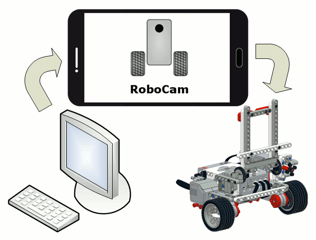
Den här artikeln beskriver de nya funktionerna i version 1.2 av RoboCam. Alla artiklar om RoboCam finns här. Du kan installera RoboCam från Google Play, eller ladda ner APK-filen och installera den manuellt: den vanliga versionen av RoboCam eller versionen av RoboCam som använder RenderScript (för vissa äldre telefoner); båda är utgåva 1.4.5. Det finns också en APKPure-spegling.
Alla ändringar i den nya versionen gäller bara robotinställningarna, så vi går direkt på vad som är nytt där. Uppdatera eller installera RoboCam, starta den och öppna inställningarna för någon robot. I artikeln använder jag inställningarna «EV3 Explorer». Om du inte vet hur man öppnar en robots inställningar, läs den första artikeln om RoboCam.
Det första som märks är kryssrutan «Visa felsökningsinformation». Om den är markerad visar klienten styrspakens koordinater medan den används, samt koderna för nedtryckta tangenter.
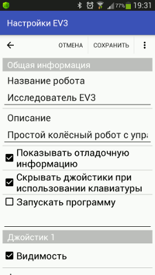
Om «Dölj styrspakar vid tangentbordsanvändning» är markerad försvinner styrspakarna på klienten så fort någon tangent trycks ned på klienten, så att de inte är i vägen. Så fort du klickar på skärmen med musen visas styrspakarna igen.
Starta ett användarprogram automatiskt på EV3
Nästa inställning är användbar om ett användarprogram måste köras på EV3-enheten medan du styr roboten via RoboCam — till exempel ett som bevakar vissa brevlådor och styr motorerna. Om du markerar «Kör program» och skriver in programfilens fullständiga sökväg i fältet nedanför (till exempel «../prjs/MyProgram/MyProgram.rbf») startar programmet på EV3 så fort RoboCam ansluter. När förarklienten kopplas från startas programmet om.
Program du skapar med den officiella programvaran LEGO MINDSTORMS Education EV3 och laddar ner till EV3 hamnar i mappen för användarprojekt «../prjs». Där skapas en mapp med projektets namn, och i den en fil med programmets namn och ändelsen «.rbf». Vi tar ett exempel. Säg att du har skapat ett enkelt projekt som heter «MyProject» med ett program som heter «MyProgram», se bilden nedan. Programmet visar texten «Hello!» på skärmen och fastnar i en oändlig slinga.
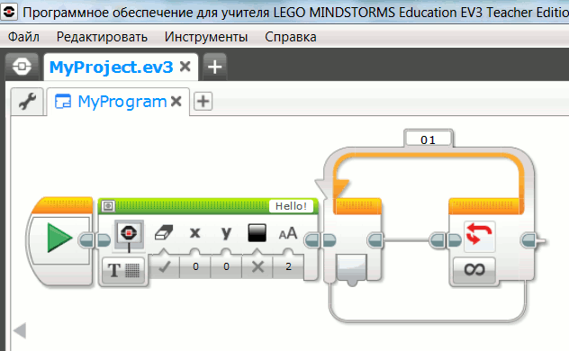
Som du ser står det «MyProject» på den övre fliken — projektets namn — och «MyProgram» på fliken under — programmets namn. När programmet har laddats ner till EV3 är sökvägen till programfilen «../prjs/MyProject/MyProgram.rbf». Det är den vi anger i RoboCams inställningar, se bilden nedan.
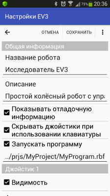
När du nu ansluter RoboCam till EV3 startar programmet «MyProgram.rbf» direkt på EV3 och texten «Hello!» visas på skärmen. När RoboCam kopplas från EV3 stoppas programmet och menyn visas på EV3-skärmen igen.
Observera att skiftläget spelar roll när du anger programmets fullständiga sökväg. Om du skriver en liten bokstav i stället för en stor startar inte programmet. Om du skriver även ett enda tecken fel i sökvägen startar programmet inte heller.
Om något användarprogram redan körs när du ansluter till EV3 startas inte programmet som anges i RoboCams inställningar.
Styra roboten med ett fysiskt tangentbord
Förutom inställningarna ovan har RoboCam nu stöd för ett fysiskt tangentbord på klienten. Låt oss se hur EV3-roboten styrs med tangentbordet. Det fungerar så här. I RoboCams inställningar anger du de tangenter som roboten ska reagera på på något sätt. Klienten känner till dessa tangenter och kontrollerar hela tiden deras status, nedtryckt eller inte. Om en av de bevakade tangenterna trycks ned eller släpps skickas tangentens kod och dess nya status direkt till RoboCam-appen. Sedan, beroende på inställningarna, styr RoboCam antingen robotens motorer direkt eller skickar tangentkoderna till EV3-brevlådor.
Tangentgrupper
För att fördela funktionerna mellan olika tangenter använder RoboCam tangentgrupper. Antalet tangentgrupper är obegränsat. Varje tangentgrupp kan, precis som styrspakarna, antingen styra motorerna direkt, eller så skickas tangentkoderna bara till en brevlåda och du överlåter bearbetningen åt ett EV3-program.
Bläddra ner i robotinställningarna till rubriken «Tangentgrupper». Om du tittar på inställningarna «EV3 Explorer» har det troligen redan lagts till två tangentgrupper (bilden nedan visar tangentgrupp 1): en för att styra roboten (tangenterna W, A, S, D och piltangenterna) och en andra för att styra ramen som håller telefonen (tangenterna Y och H).
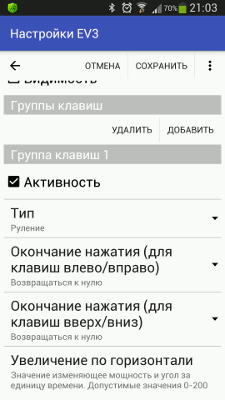
Om du har uppdaterat RoboCam ser du inga tangentgrupper i inställningarna «EV3 Explorer». Det beror på att inställningarna finns kvar från den tidigare versionen, som inte hade stöd för tangentgrupper. Om du vill att de färdiga tangentgrupperna ska dyka upp, ta bort inställningarna «EV3 Explorer»; efter att RoboCam startat om skapas de på nytt, och nu med tangentgrupper.
Du kan ta bort inställningarna «EV3 Explorer» på något av följande sätt:
-
-
- Tryck på knappen «Ta bort» i listan över inställningar. För att det ska fungera får inställningarna inte vara de aktuella.
- Rensa all RoboCam-appdata i Androids apphanterare (alla dina andra inställningar försvinner då också, så om de är viktiga för dig, exportera dem först och importera dem igen efter ominstallationen! Hur man exporterar och importerar beskrivs i artikeln om inställningar).
- Avinstallera RoboCam och installera den på nytt (alla dina andra inställningar försvinner då också, så om de är viktiga för dig, exportera dem först och importera dem igen efter ominstallationen! Hur man exporterar och importerar beskrivs i artikeln om inställningar).
-
Den första kryssrutan du ser i en tangentgrupps inställningar är «Aktiv». Om du avmarkerar den blir tangentgruppen inaktiv, som om den inte fanns alls. Inställningarna döljs då, men försvinner inte.
Tangenternas status kontrolleras hela tiden på klienten, även när tangentbordet inte används. Om du bara planerar att använda styrspakar rekommenderas därför att avaktivera alla tangentgrupper, så att klientens processor inte belastas och batteriet inte töms.
Därefter kommer valet av tangentgruppstyp — inställningen «Typ». Varje tangentgrupp kan vara av en av tre typer: «Oberoende motorer», «Styrning» eller «Brevlåda».
För tangentgrupperna «Oberoende motorer» och «Styrning» kan du ange ett obegränsat antal tangenter «upp» och «ner» (vi kallar dem den vertikala axelns tangenter) och tangenter «höger» och «vänster» (den horisontella axelns tangenter). Hur du gör det ser du strax nedan.
I en grupp «Oberoende motorer» kan den vertikala axelns tangenter styra en motor (nedan motor A) eller flera motorer, och den horisontella axelns tangenter en annan motor (nedan motor B) eller andra motorer. Motor A är inte beroende av den horisontella axelns tangenter, och motor B är inte beroende av den vertikala axelns tangenter. Därför kallas den här typen av tangentgrupp «Oberoende motorer».
För en grupp «Oberoende motorer» anges portarna för motorerna som styrs av den vertikala axelns tangenter och portarna för motorerna som styrs av den horisontella axelns tangenter var för sig. Med en sådan tangentgrupp kan du till exempel köra en bil där tangenterna «upp» och «ner» accelererar och stoppar motorn som driver bakhjulen, och tangenterna «vänster» och «höger» vrider motorn som styr.
I en grupp «Styrning» är den vertikala och den horisontella axelns tangenter kopplade till varandra. Här anges portarna för vänster och höger motor, och när du trycker på en tangent snurrar båda motorerna. Om du till exempel trycker på «upp» snurrar båda motorerna så att roboten kör framåt; om du trycker på «vänster» snurrar också båda motorerna, men vänster hjul bakåt och höger hjul framåt, så att roboten svänger åt vänster.
En tangentgrupp «Brevlåda» har också tangenter, men här styr de inte roboten utan skickas bara vidare till den angivna brevlådan på EV3. Tangenter som inte anges här når inte tangentgruppens brevlåda.
Nu tittar vi närmare på inställningarna för tangentgrupperna «Oberoende motorer» och «Styrning». Lite längre ner ser du parametrarna «Slut på tryckning (för vänster/höger-tangenter)» och «Slut på tryckning (för upp/ner-tangenter)», som bestämmer vad som händer när användaren släpper en nedtryckt tangent. Precis som för styrspakarna finns två alternativ — «Återgå till noll» och «Behåll position».
Det fungerar så här. Säg att robotens två motorer snurrar och roboten kör framåt när du trycker på W. Om «Återgå till noll» är inställt går hastigheten tillbaka till noll när du släpper W, motorerna slutar snurra och roboten stannar. Om «Behåll position» hade varit inställt hade motorn fortsatt att snurra; hastigheten hålls alltså kvar efter att tangenten släppts.
Ett annat exempel. Säg att tangenten Y ändrar medelmotorns vridningsvinkel så att ramen som håller telefonen lutar nedåt. Om «Återgå till noll» är inställt går medelmotorns vinkel tillbaka till noll när du släpper Y, och ramen vrids tillbaka och står lodrätt. Om «Behåll position» är inställt och du släpper Y, förblir motorn vriden i den vinkel den hade när Y släpptes, och ramen behåller sin position.
Nästa parametrar för tangentgruppen styr den stegvisa ökningen eller minskningen av motorernas hastighet eller vridningsvinkel. En tangent har bara två tillstånd — nedtryckt eller släppt. Tänk dig att vi kör EV3 Explorer och trycker på Y och vinkeln ändras med 100 grader på en gång. Det sker så abrupt att telefonen som sitter på ramen kan lossna och flyga iväg. Eller en annan situation: du trycker på D och roboten börjar svänga häftigt åt höger; vi behövde bara svänga lite, men på grund av den höga hastigheten svängde vi för mycket.
En robot som beter sig så är inte vad vi vill ha, så med stegvis ändring av hastighet och vinkel kan vi göra tangentbordsstyrningen bekvämare. Vi kan till exempel låta roboten accelerera gradvis när den kör och ramen röra sig i små steg. Precis så är inställningarna «EV3 Explorer» gjorda. Låt oss titta på parametrarna.
Lite längre ner ser du sex fält för stegvis motorstyrning: «Ökning horisontellt», «Ökning vertikalt», «Minskning horisontellt», «Minskning vertikalt», «Paus mellan horisontella ökningar/minskningar» och «Paus mellan vertikala ökningar/minskningar».
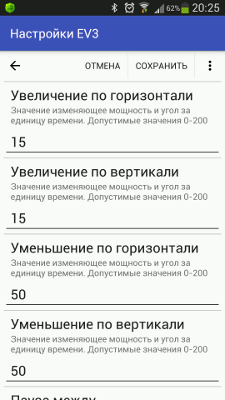
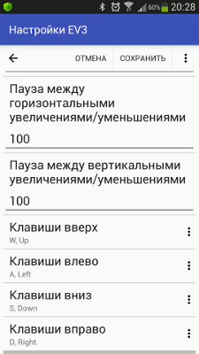
Som skrivet ovan har vi den vertikala axelns tangenter och den horisontella axelns tangenter. «Ökning horisontellt» och «Minskning horisontellt» anger med vilket steg hastigheten eller vinkeln för de anslutna motorerna ändras när den horisontella axelns tangenter används, och «Ökning vertikalt» och «Minskning vertikalt» gör detsamma för den vertikala axelns tangenter. [Översättarens anmärkning: originaltexten säger ”den vertikala axelns tangenter” för båda paren; det horisontella paret avser uppenbarligen den horisontella axeln.] «Paus mellan horisontella ökningar/minskningar» och «Paus mellan vertikala ökningar/minskningar» anger intervallet i millisekunder mellan stegen.
Vi går igenom ett exempel. Säg att W är tangenten «upp», alltså en tangent på den vertikala axeln. Två stora motorer som driver hjulen är knutna till den. I våra inställningar är ökningen vertikalt 15 och minskningen 50. Det betyder att när vi trycker ned och håller W på klienten ökar de stora motorernas varvtal stegvis med 15 enheter var 100:e millisekund tills det når maxvärdet, 100 enheter. Roboten accelererar alltså mjukt. När vi släpper W börjar hastigheten sjunka stegvis med 50 enheter var 100:e millisekund tills den når noll. Roboten stannar alltså också mjukt, men mycket kärvare än den accelererade.
Observera att en ”ökning” här avser en ändring av hastighet eller vinkel från 0 till 100 och från 0 till -100, och en ”minskning” en ändring från 100 till 0 och från -100 till 0.
Stegvärdena kan ligga mellan 0 och 200; om du anger 0 eller 200 ändras hastigheten eller vinkeln abrupt i stället för stegvis.
Pausvärdet kan inte vara mindre än 100 millisekunder. Tänk på att den verkliga pausen mellan stegen kan vara längre än den du anger, eftersom det kan uppstå fördröjningar när kommandon skickas till EV3.
Med de följande fyra knapparna — «Upp-tangenter», «Vänster-tangenter», «Ner-tangenter» och «Höger-tangenter» — tilldelar du bestämda tangenter för att styra roboten. För att ange eller ändra de valda tangenterna, tryck på den knapp du behöver. Då öppnas en lista över tillgängliga tangenter. Välj de tangenter du vill ha och tryck på knappen «Klar».
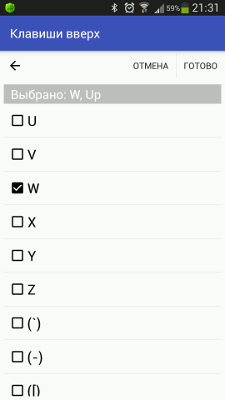
Om du ansluter ett fysiskt tangentbord till telefonen kan du välja tangenter med det, genom att trycka på önskad tangent medan listan är öppen. Alla tangenter går dock inte att välja på det sättet.
Därnäst i tangentgruppens inställningar kommer portarna. Tangentgruppens portar ställs in på samma sätt som styrspakarnas, och det går jag inte in på i detalj här. Om portinställningar, läs artikeln «Styr en LEGO Mindstorms EV3-robot i förstaperson».
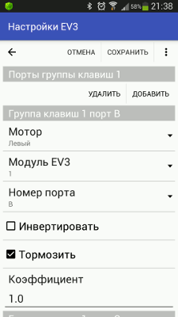
Nu tittar vi separat på inställningarna för tangentgruppen «Brevlåda». Om du byter typ till «Brevlåda» ser du att inställningarna för tangentgruppen ändras. Det finns bara «Brevlådenamn» och «Tangenter». I fältet «Brevlådenamn» anger du namnet på den EV3-brevlåda som ska ta emot koderna för nedtryckta tangenter bland dem du listar nedan med knappen «Tangenter». Koder för tangenter som inte listas här kommer inte till brevlådan.
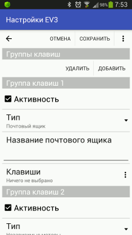
Vi tar ett exempel på hur man får koderna för siffertangenterna 0–9 på EV3. Vi ger brevlådan namnet «test» och anger alla tangenter från 0 till 9.
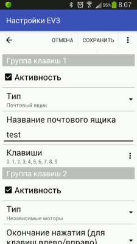
Nu bygger vi om EV3-programmet vi gjorde ovan enligt följande, se bilden nedan. Här visar vi helt enkelt på skärmen tangentkoden som tas emot från brevlådan «test». Ladda ner det färdiga programmet till EV3.
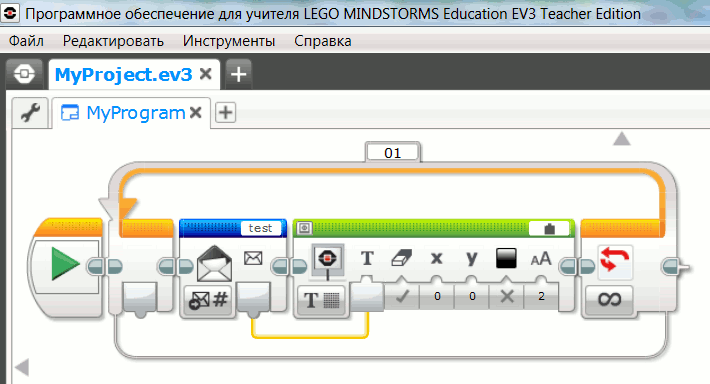
Tyvärr kan brevlådeblocket inte ta emot en matris av tal, så bara koden för den senast nedtryckta tangenten skickas till brevlådan, eller 0 om den senast nedtryckta tangenten släpptes. För att hantera flera tangenter oberoende av varandra behöver du därför flera brevlådor — en brevlåda per tangent.
När programmet har laddats ner till EV3, glöm inte att markera «Kör program» och ange dess sökväg «../prjs/MyProject/MyProgram.rbf».
När du nu ansluter RoboCam till EV3 startar programmet MyProgram.rbf direkt på EV3 och siffran 0 visas på skärmen, vilket betyder att ingen tangent är nedtryckt. Starta nu RoboCam-servern, anslut till den med en webbläsare på din dator och prova att trycka på tangenter. Du ser att när du trycker på siffertangenterna visas koden för den senast nedtryckta tangenten på EV3-skärmen, och när du trycker på andra tangenter visas 0.
Nu pratar vi om tangentkoder. Du kan använda de flesta tangenter; deras koder följer till stor del ASCII. Det finns dock så kallade snabbtangenter som webbläsaren reagerar på på ett särskilt sätt. Till exempel öppnar F1 webbläsarens hjälp och F5 uppdaterar den öppna sidan. Sådana tangenter är inte tillgängliga i RoboCam. Tabellen nedan visar alla tangenter du kan använda med RoboCam, och deras koder.
| Kod | Tangent | Kod | Tangent | Kod | Tangent |
| 8 | Backspace | 57 | 9 | 99 | 3 (Numpad) |
| 9 | Tab | 65 | A | 100 | 4 (Numpad) |
| 12 | Clear | 66 | B | 101 | 5 (Numpad) |
| 13 | Enter | 67 | C | 102 | 6 (Numpad) |
| 16 | Shift | 68 | D | 103 | 7 (Numpad) |
| 17 | Ctrl | 69 | E | 104 | 8 (Numpad) |
| 18 | Alt | 70 | F | 105 | 9 (Numpad) |
| 19 | Pause | 71 | G | 106 | (*) (Numpad) |
| 20 | Caps Lock | 72 | H | 107 | (+) (Numpad) |
| 27 | Esc | 73 | I | 109 | (-) (Numpad) |
| 32 | Space | 74 | J | 110 | (.) (Numpad) |
| 33 | Page Up | 75 | K | 113 | F2 |
| 34 | Page Down | 76 | L | 115 | F4 |
| 35 | End | 77 | M | 118 | F7 |
| 36 | Home | 78 | N | 119 | F8 |
| 37 | Left | 79 | O | 120 | F9 |
| 38 | Up | 80 | P | 121 | F10 |
| 39 | Right | 81 | Q | 144 | Num Lock |
| 40 | Down | 82 | R | 145 | Scroll Lock |
| 45 | Ins | 83 | S | 186 | (;) |
| 46 | Del | 84 | T | 188 | (,) |
| 48 | 0 | 85 | U | 189 | (-) |
| 49 | 1 | 86 | V | 190 | (.) |
| 50 | 2 | 87 | W | 191 | (/) |
| 51 | 3 | 88 | X | 192 | (`) |
| 52 | 4 | 89 | Y | 219 | ([) |
| 53 | 5 | 90 | Z | 220 | (\) |
| 54 | 6 | 96 | 0 (Numpad) | 221 | (]) |
| 55 | 7 | 97 | 1 (Numpad) | 222 | (') |
| 56 | 8 | 98 | 2 (Numpad) |
Det var den nya funktionaliteten i RoboCam. Även de andra RoboCam-artiklarna kan vara till nytta.
Alla RoboCam-versioner
- v1.4.2 Förvandla en smartphone till fjärrkontroll för roboten med RoboCam
- v1.3.1 Bygg förstapersonsstyrning för en Arduino-robot
- v1.2 RoboCam – styr roboten i förstaperson med datorns tangentborddu är här
- v1.1 Importera, exportera, kopiera och skicka robotinställningar i RoboCam
- v1.0 Styr en LEGO Mindstorms EV3-robot i förstaperson